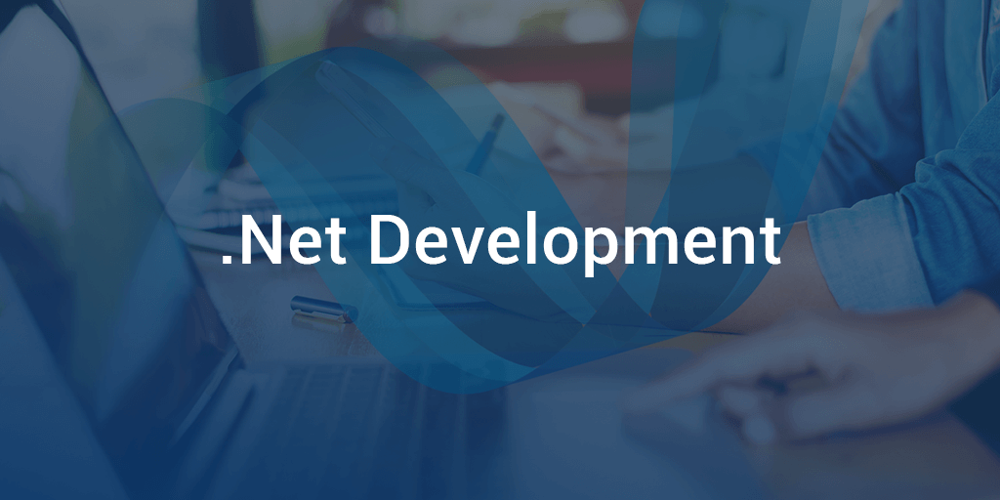
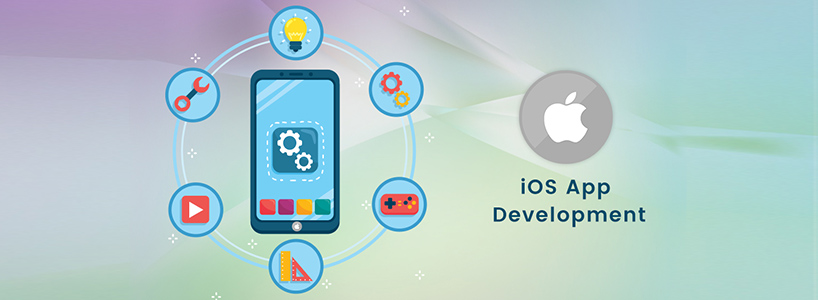
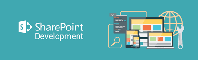
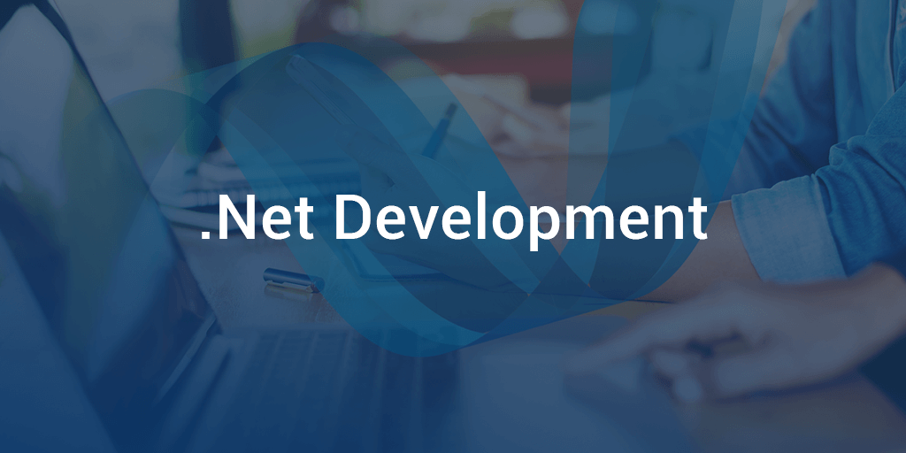
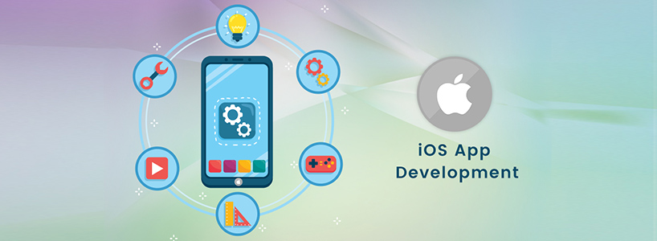
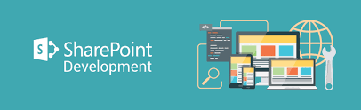

What we do
The work we do
ClaySys, as a technology consulting service provider, specializes in delivering IT solutions that make a positive impact on businesses. Our focus is not only on a successful technical implementation, but we are mindful of the business impact all through the project, to ensure we mould and tune the implementation to stay aligned with the key business objectives at all times. We work with a wide portfolio of technologies and products, to enable us to deliver real value to our customers and to provide consulting services to our customers with their existing investments in their technology platforms. If you have a defined requirement, our technology consultants would be able to plan, design and develop your custom solution, in most cases based on a fixed price engagement. The ability to engage on a fixed price basis is dependent on the client's solution requirements being defined in enough detail. We also have an option to support a client to initially create and finalize the requirements and design, at which point we could transition to a fixed price engagement for the development and final deliverable phase.
Why we are different
ClaySys has always focused on a partnership model and building long term relationships with our clients. So our focus is always the best interests of our clients, versus just a specific technology project. We believe in retaining key employees, as that ensures continuity of quality support to our clients, without the disruption associated with a constant churn and attrition with employees. Since we are a software product company as well, we try to adhere to the highest standards in terms of technology architecture, patterns, security practices, and solution scalability and maintainability.
Who we are
ClaySys was founded to deliver technology solutions that positively impacted the business, versus just technology solutions that were technically excellent, but may not have delivered on the key business objectives. We achieve this through a structured methodology that maps the business impact on every aspect of the technology solution being designed and developed. The core team at ClaySys are tenured IT Consultants who were involved in large scale technology projects starting from the early nineties.
 




